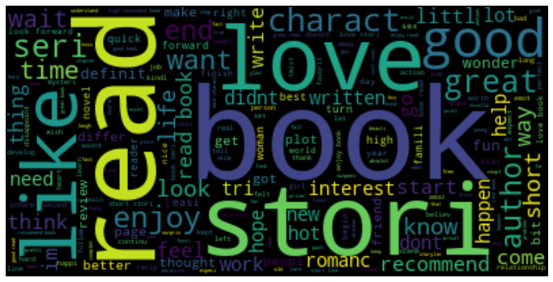
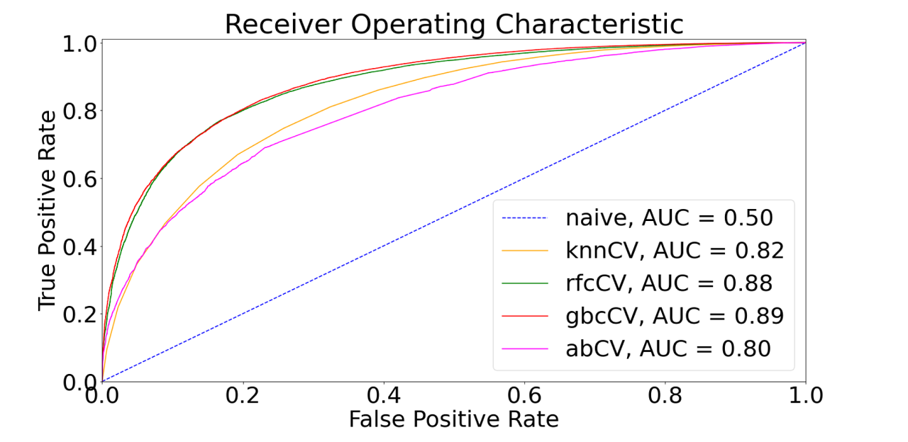

A Horse Race to classify Amazon Kindle Reviews
This work was submitted to the Barcelona School of Economics of the Pompeu Fabra University, graded A+. In this project 1,000,000 Amazon Kindle reviews available at kaggle are analyzed.
The reviews originate from the Kindle Book Store, i.e., the data refers to books. The goal is to develop an algorithm that predicts whether a previously unseen review is positive or negative based on it's text content. The analysis is divided into two parts: First, the data is cleaned, and the text of the reviews is preprocessed such that it is suitable for computations; second, a horse race is carried out to identify the best performing machine learning model given the circumstances.
 Text preprocessing includes removing all punctuation, all stop words, all numbers, stemming and lemming, as well as vectorization. Stemming and Lemming means that different variants of a word are traced back to their common root. After vectorization, a matrix is obtained in which the columns represent all the words used in all the reviews. The entries for each observation, indicate how often the word of each column occurs in a given review. As a result, the matrix obtained is rather big, and not all its features are relevant for the subsequent analysis. Therefore, TfidfVectorizer from sklearn.feature_extraction.text is used to identify meaningful features. The words deemed meaningful are displayed in the word cloud on the left.
 In the subsequent analysis, a horse race is carried out between sklearn.neighbors.KNeighborsClassifier, sklearn.ensemble.RandomForestClassifier, sklearn.ensemble.GradientBoostingClassifier and sklearn.ensemble.AdaBoostClassifier. Based on the graph on the right, the Gradient Boosting Classifier slightly performs best on the basis of the ROC-AUC score, rendering it the horse race winner.
If you are curious about the implementation details, please get in touch or visit my GitHub repository.